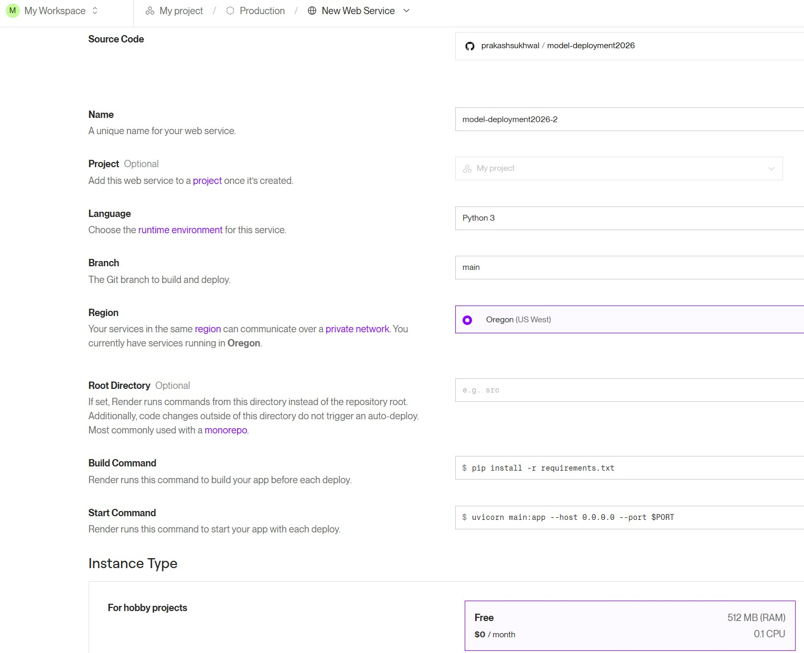
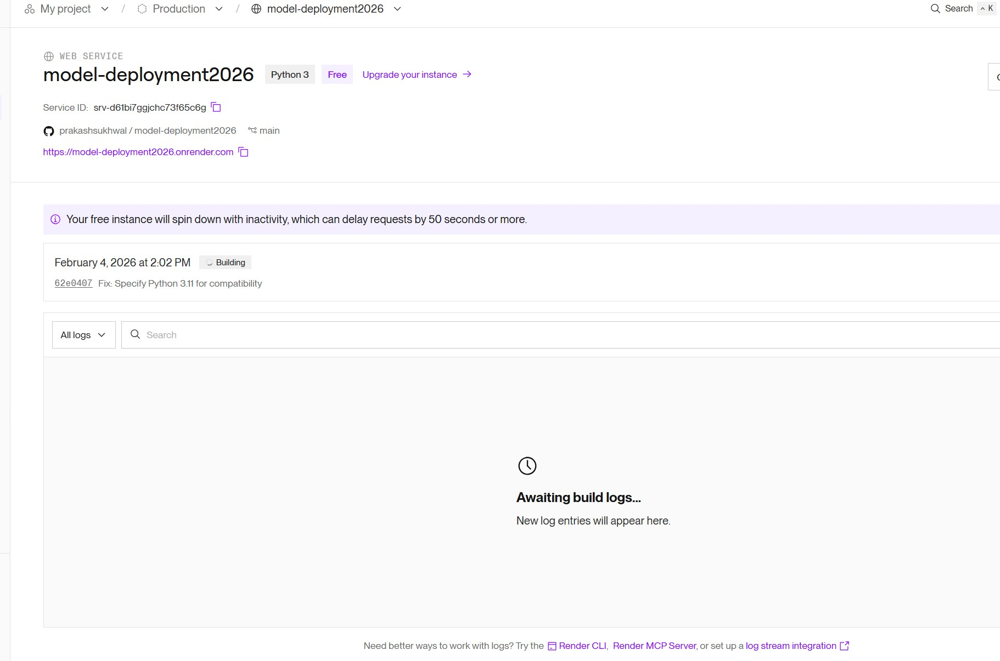
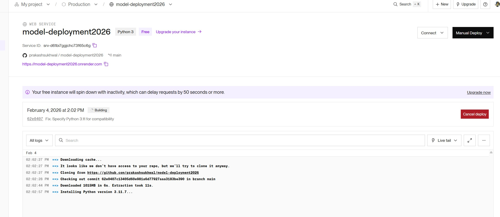
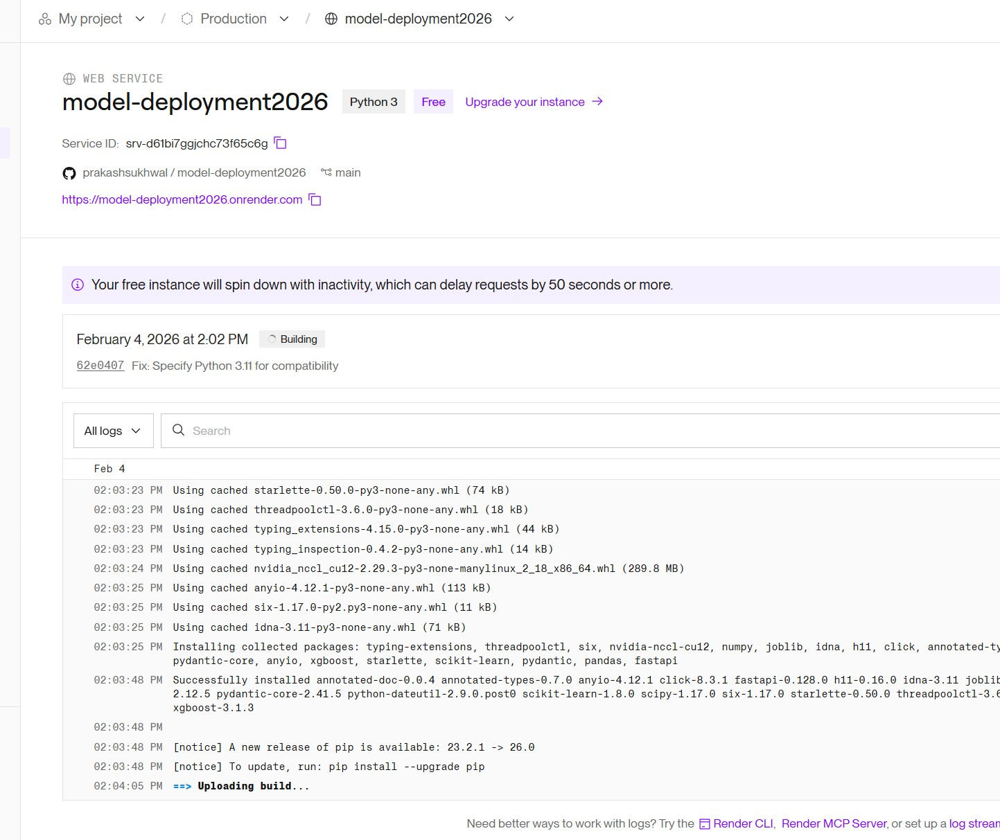
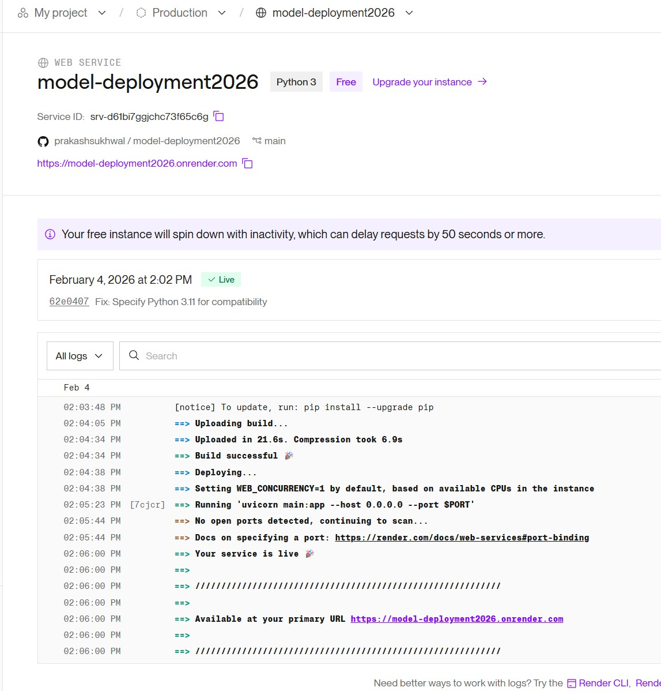

A Practical Introduction: Train → API → Deploy
1 Train ensemble models using sklearn Pipelines
2 Save models properly for deployment
3 Build a FastAPI prediction service
4 Deploy to Render.com (cloud)
5 Create a Streamlit frontend
The Data Journey: From Raw Features to Predictions
Building & saving ML pipelines
from sklearn.pipeline import Pipeline
from sklearn.compose import ColumnTransformer
from sklearn.preprocessing import OrdinalEncoder
# Define column types
CATEGORICAL_COLS = ['category']
NUMERIC_COLS = ['amount', 'age_at_transaction', 'loc_delta', ...]
# Create preprocessor
preprocessor = ColumnTransformer([
('cat', OrdinalEncoder(handle_unknown='use_encoded_value',
unknown_value=-1), CATEGORICAL_COLS),
('num', 'passthrough', NUMERIC_COLS)
])
# Create complete pipeline
pipeline = Pipeline([
('preprocessor', preprocessor), # Step 1: Transform features
('classifier', XGBClassifier()) # Step 2: Train model
])# BEST PRACTICE: Always clone(preprocessor) for each pipeline
from sklearn.base import clone
# Train XGBoost Pipeline
xgb_pipeline = Pipeline([
('preprocessor', clone(preprocessor)), # Fresh copy
('classifier', XGBClassifier(n_estimators=100, max_depth=6,
scale_pos_weight=scale_pos_weight))
])
xgb_pipeline.fit(X_train, y_train)
# Train Random Forest Pipeline
rf_pipeline = Pipeline([
('preprocessor', clone(preprocessor)), # Fresh copy
('classifier', RandomForestClassifier(n_estimators=100,
class_weight='balanced'))
])
rf_pipeline.fit(X_train, y_train)# Get probability predictions from each model
xgb_prob = xgb_pipeline.predict_proba(X_test)[:, 1] # e.g., 0.85
rf_prob = rf_pipeline.predict_proba(X_test)[:, 1] # e.g., 0.65
# Ensemble = average of probabilities
ensemble_prob = (xgb_prob + rf_prob) / 2 # = 0.75
ensemble_pred = (ensemble_prob >= 0.5).astype(int) # = 1 (FRAUD)import joblib
import json
import os
os.makedirs('models', exist_ok=True)
# Save complete pipelines (preprocessor + model)
joblib.dump(xgb_pipeline, 'models/xgboost_pipeline.pkl')
joblib.dump(rf_pipeline, 'models/random_forest_pipeline.pkl')
# Save metadata
metadata = {
'feature_columns': FEATURE_COLS,
'category_classes': list(encoder.categories_[0]),
'metrics': {'xgboost': xgb_metrics, 'rf': rf_metrics}
}
with open('models/model_metadata.json', 'w') as f:
json.dump(metadata, f, indent=2)models/xgboost_pipeline.pkl, random_forest_pipeline.pkl, model_metadata.json
models/
├── xgboost_pipeline.pkl # Preprocessor + XGBoost
├── random_forest_pipeline.pkl # Preprocessor + Random Forest
├── model_metadata.json # Features, categories, metrics
└── feature_stats.json # For drift detection| Tool | Input | Output |
|---|---|---|
| Google Colab | Raw transaction data (CSV) | Trained pipelines |
| Jupyter Notebook | L6.1_Fraud_Detection_Training_v2.ipynb | models/ folder |
Click each question to reveal the answer
pipeline.predict(raw_data). No need to remember transformation steps or load multiple files.
Building the prediction API
"Can't I just put model.pkl in GitHub and load it directly?"
↑ All use the SAME FastAPI backend
from fastapi import FastAPI
app = FastAPI()
@app.get("/")
def health():
return {"status": "healthy"}
@app.post("/predict")
def predict(data: Input):
return {"prediction": 1}Deploy_Render/
├── main.py # FastAPI application
├── requirements.txt # Python dependencies
├── Procfile # Render start command
├── .python-version # Python version (3.11.7)
└── models/
├── xgboost_pipeline.pkl
├── random_forest_pipeline.pkl
├── model_metadata.json
└── feature_stats.jsonfrom fastapi import FastAPI
import joblib
import json
from pathlib import Path
app = FastAPI(title="Fraud Detection API")
# Load pipelines at startup
MODEL_DIR = Path("models")
xgb_pipeline = joblib.load(MODEL_DIR / "xgboost_pipeline.pkl")
rf_pipeline = joblib.load(MODEL_DIR / "random_forest_pipeline.pkl")
with open(MODEL_DIR / "model_metadata.json") as f:
metadata = json.load(f)
print("Models loaded successfully!")model.predict([[None, "abc", -999]]) → Model crashes or gives garbage"amount must be >= 0.01"
from pydantic import BaseModel, Field, field_validator
class TransactionInput(BaseModel):
# Field() with constraints and descriptions
category: str = Field(
..., # Required (...)
description="Transaction category"
)
amount: float = Field(
...,
ge=0.01, le=50000, # Min/Max constraints
description="Transaction amount in dollars"
)
age_at_transaction: float = Field(..., ge=18, le=100)
loc_delta: float = Field(default=0.0, ge=0, le=1)
# Custom validator
@field_validator('category')
@classmethod
def validate_category(cls, v):
if not v.strip():
raise ValueError('Category cannot be empty')
return v.strip()/docs → See automatic error messages!
@app.post("/predict", response_model=PredictionResponse)
def predict(transaction: TransactionInput):
# Create DataFrame with RAW features
X = pd.DataFrame([{
'category': transaction.category, # Raw string!
'amount': transaction.amount,
'age_at_transaction': transaction.age_at_transaction,
# ... other features
}])[FEATURE_COLS]
# Pipelines handle preprocessing automatically!
xgb_prob = float(xgb_pipeline.predict_proba(X)[0, 1])
rf_prob = float(rf_pipeline.predict_proba(X)[0, 1])
ensemble_prob = (xgb_prob + rf_prob) / 2
return PredictionResponse(
xgboost_probability=xgb_prob,
random_forest_probability=rf_prob,
ensemble_probability=ensemble_prob,
verdict="FRAUD" if ensemble_prob >= 0.5 else "LEGIT"
)fastapi>=0.109.0
uvicorn>=0.27.0
pydantic>=2.5.0
joblib>=1.3.0
numpy>=1.24.0,<2.0.0
pandas>=2.0.0
xgboost>=2.0.0
scikit-learn>=1.3.0web: uvicorn main:app --host 0.0.0.0 --port $PORTTells Render how to start the server
3.11.7Specifies Python version (avoid 3.13 issues!)
# Install dependencies
pip install -r requirements.txt
# Start server
uvicorn main:app --reload
# Server runs at http://localhost:8000Test endpoints:
http://localhost:8000/ - Health checkhttp://localhost:8000/docs - Interactive API docshttp://localhost:8000/predict - POST prediction| Tool | Input | Output |
|---|---|---|
| VS Code / Terminal | Deploy_Render/ folder | Running API server |
| Browser | localhost:8000/docs | Interactive Swagger UI |
uvicorn main:app --reload → 2. Open /docs → 3. Try /predict with sample data
Click each question to reveal the answer
Field(ge=0.01, le=50000) do for an ML API?ge=0.01 means "greater or equal to 0.01". The le=50000 means "less or equal to 50000". Invalid inputs get a clear error message instead of crashing the model or producing garbage predictions.
Taking your API to the cloud
# Initialize git in Deploy_Render folder
cd Deploy_Render
git init
git add .
git commit -m "Fraud Detection API"
# Create repo on GitHub, then push
git remote add origin https://github.com/YOUR_USER/model-deployment.git
git branch -M main
git push -u origin main1 Go to render.com
2 Click "Sign Up"
3 Select "Sign up with GitHub" (easiest!)
4 Authorize Render to access your GitHub
1 Go to My Project
2 Click + New Service
3 Select Web Service
4 Select tab: Public GitHub Repository
5 Enter URL:
https://github.com/prakashsukhwal/model-deployment2026
6 Click Connect
| Name | model-deployment2026-1 |
| Language | Python 3 |
| Branch | main |
| Region | Oregon (US West) |
| Build Cmd | pip install -r requirements.txt |
| Start Cmd | uvicorn main:app --host 0.0.0.0 --port $PORT |
| Instance | Free ($0/month) |
7 Click Deploy Web Service
Render.com New Web Service settings
Click New → Web Service
Select your GitHub repository and click Connect
Set name, region, and select Free instance
pip install -r requirements.txtuvicorn main:app --host 0.0.0.0 --port $PORT
Wait for build to complete → Your API is live!
Visit: https://model-deployment2026.onrender.com/docs
| Endpoint | Full URL |
|---|---|
| Health Check | https://model-deployment2026.onrender.com/ |
| API Docs | https://model-deployment2026.onrender.com/docs |
| Predict | https://model-deployment2026.onrender.com/predict (POST) |
| Model Info | https://model-deployment2026.onrender.com/model-info |
1 Open browser
2 Go to: /docs
3 Click POST /predict
4 Click "Try it out"
5 Edit values & click "Execute"
No coding needed! Best for beginners.
Open PowerShell (Windows) or Terminal (Mac)
# Health check (just paste & Enter)
curl https://model-deployment2026.onrender.com/
# Or in browser, simply visit the URL aboveFor POST requests, use the /docs page instead - much easier!
{
"transaction_id": "txn_20260204_052259_000001",
"timestamp": "2026-02-04T05:22:59.271786",
"xgboost_probability": 0.9739,
"random_forest_probability": 0.4688,
"ensemble_probability": 0.7213,
"ensemble_prediction": 1,
"verdict": "HIGH RISK - Likely Fraud",
"drift_warnings": ["trans_freq: 5.00 is >3 std from mean (1.14)"]
}"I have 20 transactions to check - do I click 20 times?"
import requests
API = "https://model-deployment2026.onrender.com"
# Your batch of transactions
for txn in transactions:
result = requests.post(
f"{API}/predict",
json=txn
).json()
print(f"${txn['amount']:.2f} → "
f"{result['verdict']}")L6.2_Bulk_Scoring_Demo.ipynb - Ready-to-run Colab notebook!
Scoring 20 transactions...
======================================================================
[ 1/20] $ 45.50 Grocery → 2.0% (LEGITIMATE - Approved)
[ 2/20] $ 55.00 Gas → 1.9% (LEGITIMATE - Approved)
[ 3/20] $ 28.75 Food → 0.8% (LEGITIMATE - Approved)
...
[11/20] $2500.00 Shopping → 4.8% (LEGITIMATE - Approved)
[12/20] $1800.00 Entertainment → 2.8% (LEGITIMATE - Approved)
...
======================================================================
Completed 20 transactions in 45.3 seconds
SUMMARY: 0 FRAUD, 20 LEGIT# feature_stats.json stores training distribution
{"amount": {"mean": 75.2, "std": 120.5}, ...}
def check_drift(features: dict) -> list:
"""Flag features > 3 std from training mean."""
warnings = []
for feature, value in features.items():
if feature in feature_stats:
mean = feature_stats[feature]["mean"]
std = feature_stats[feature]["std"]
if abs(value - mean) > 3 * std:
warnings.append(
f"{feature}: {value:.2f} is >3 std from mean ({mean:.2f})"
)
return warnings"drift_warnings": [...] for every prediction
| timestamp | When |
| transaction_id | Unique ID |
| input | All features |
| predictions | All model outputs |
| has_drift | Anomaly flag |
| latency_ms | Response time |
# Log every prediction to JSONL file (one JSON per line)
log_entry = {
"timestamp": datetime.utcnow().isoformat(),
"transaction_id": request_id,
"input": transaction.model_dump(), # All input features
"predictions": {
"xgboost": {"prob": 0.85},
"random_forest": {"prob": 0.62},
"ensemble": {"prob": 0.72, "pred": 1}
},
"verdict": "HIGH RISK",
"has_drift": len(drift_warnings) > 0,
"drift_warnings": drift_warnings
}
prediction_logger.info(json.dumps(log_entry))@app.get("/logs/summary")
def get_log_summary():
"""Aggregate logs for monitoring dashboard."""
# Read predictions.jsonl
for line in open("logs/predictions.jsonl"):
entry = json.loads(line)
total += 1
if entry["predictions"]["ensemble"]["pred"] == 1:
fraud_count += 1
if entry["has_drift"]:
drift_count += 1
return {
"total_predictions": total,
"fraud_rate": fraud_count / total * 100,
"drift_rate": drift_count / total * 100
}Services "sleep" after 15 min of inactivity.
First request takes ~30-60 seconds.
When service sleeps, all local files are deleted!
Your logs/predictions.jsonl resets to empty.
| Tool | Input | Output |
|---|---|---|
| GitHub | Deploy_Render/ folder | Public repository |
| Render.com | GitHub repo URL | Live API URL |
| Browser | your-api.onrender.com/docs | Cloud-hosted Swagger UI |
Click each question to reveal the answer
Procfile in your deployment folder?web: uvicorn main:app --host 0.0.0.0 --port $PORT. Without it, Render wouldn't know how to launch your application.
Click each question to reveal the answer
.python-version file with "3.11.7" in it?requests library. This is faster, automated, and the results can be saved to a CSV file for review.
Creating a user-friendly interface
# app.py
import streamlit as st
import requests
st.set_page_config(page_title="Fraud Detection", layout="wide")
# API URL - defaults to deployed Render service
API_URL = os.environ.get("API_URL", "https://model-deployment2026.onrender.com")
# Two tabs
tab1, tab2 = st.tabs(["Prediction", "Model Stats"])
with tab1:
# Input widgets
category = st.selectbox("Category", categories)
amount = st.number_input("Amount", value=150.0)
if st.button("Check for Fraud"):
response = requests.post(f"{API_URL}/predict", json=payload)
st.metric("Fraud Probability", f"{result['ensemble_probability']*100:.1f}%")Create Deploy_Streamlit/ folder with:
Deploy_Streamlit/
├── app.py # Main Streamlit app
├── requirements.txt # Dependencies
└── README.md # Instructionsstreamlit>=1.31.0
requests>=2.31.0
pandas>=2.0.0# Create new repository on GitHub: fraud-detection-app
cd Deploy_Streamlit
git init
git add .
git commit -m "Streamlit fraud detection app"
git branch -M main
git remote add origin https://github.com/YOUR_USERNAME/fraud-detection-app.git
git push -u origin main1 Go to share.streamlit.io
2 Click "Sign in with GitHub"
3 Click "New app"
4 Select your fraud-detection-app repository
5 Set Main file path: app.py
6 Click "Deploy!"
To use a different API URL:
In Advanced Settings → Secrets:
API_URL = "https://your-api-url.onrender.com"https://model-deployment2026.onrender.com
https://your-app-name.streamlit.app
Tab 1
Interactive Prediction
Tab 2
Model Stats
| Tool | Input | Output |
|---|---|---|
| GitHub | Deploy_Streamlit/ folder | Public repository |
| Streamlit Cloud | GitHub repo + app.py | Live dashboard URL |
| Browser | your-app.streamlit.app | Interactive fraud checker |
Click each question to reveal the answer
| Error | Cause | Fix |
|---|---|---|
| Python 3.13 pandas error | Pandas incompatible with Python 3.13 | Add .python-version file with 3.11.7 |
| Model not found | Missing .pkl files | Ensure models/ folder is committed |
| 502 Bad Gateway | Server crashed | Check Render logs for errors |
| Request timeout | Cold start | Wait 30-60 seconds, try again |
| Category not found | Unknown category value | Pipeline handles with unknown_value=-1 |
# Check Render logs
# Dashboard → Your Service → Logs tab
# Common log messages:
"Models loaded successfully!" # ✓ Good
"Error loading models: ..." # ✗ Check model files
"INFO: Uvicorn running on ..." # ✓ Server startedmain.py to debug issues
✅ sklearn Pipelines = preprocessing + model in one object
✅ No data leakage - encoder fit only on training data
✅ Simple deployment - one .pkl file has everything
✅ FastAPI = auto-documentation, validation, async
✅ Render.com = free API hosting from GitHub
✅ Streamlit Cloud = free frontend hosting
✅ Version pinning (.python-version) avoids issues
Test your knowledge of ML deployment concepts
Thank you!